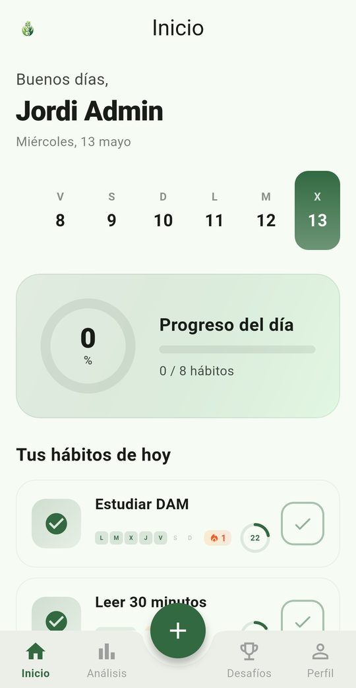
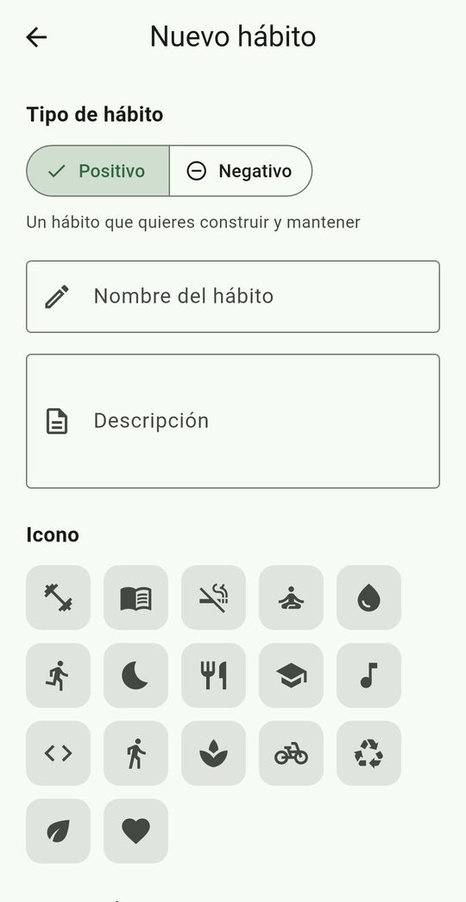
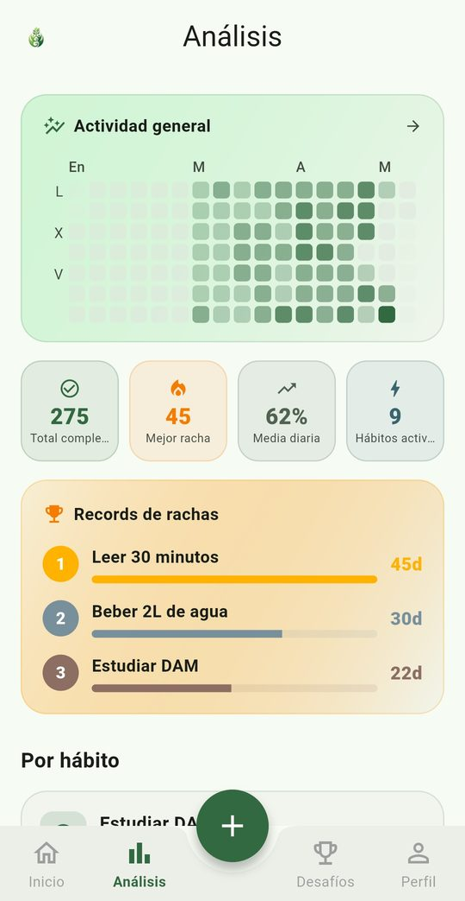
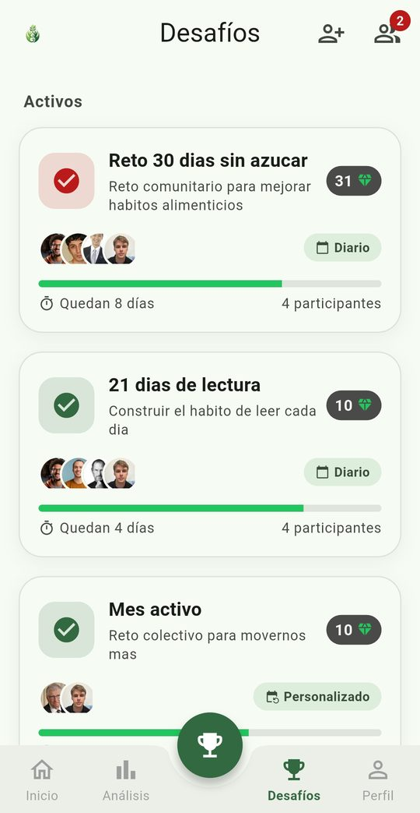
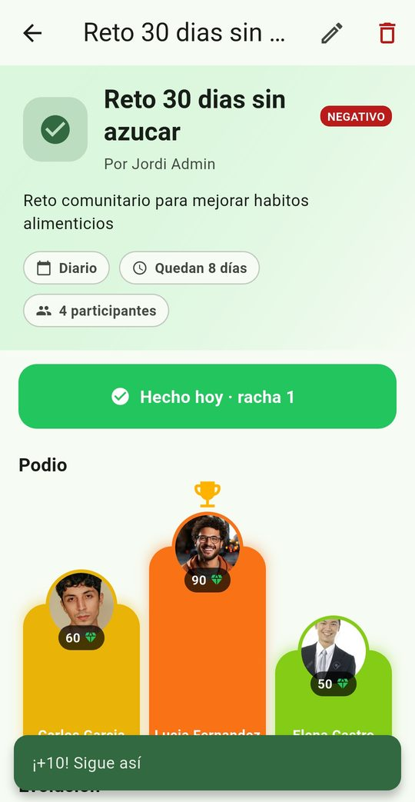
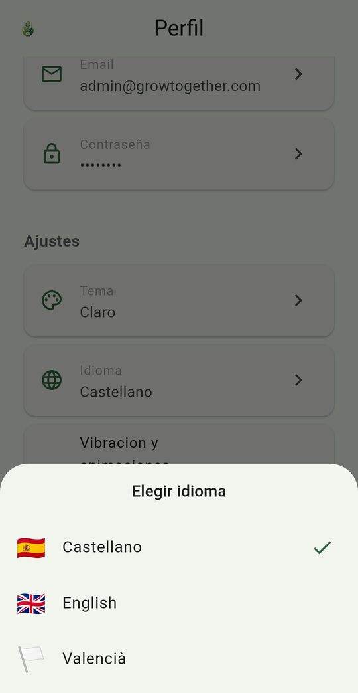
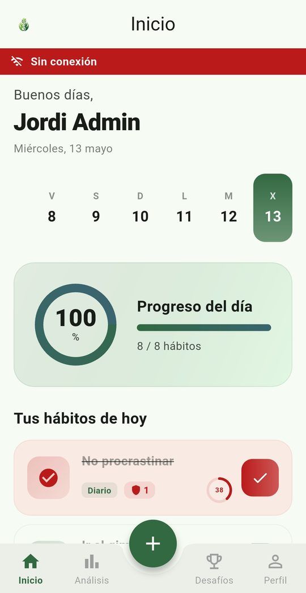
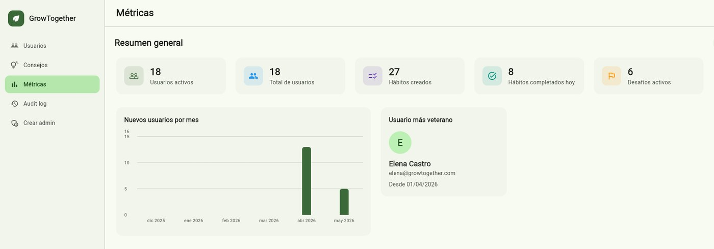
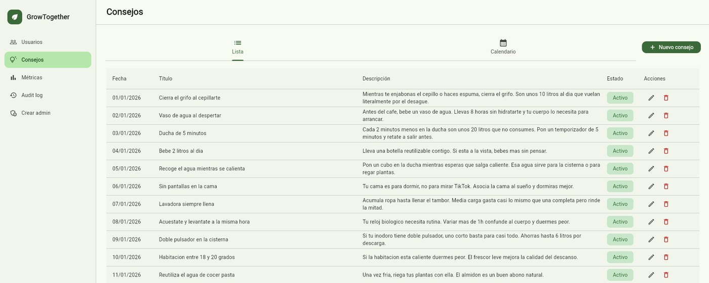

GrowTogether
Una app de hábitos con componente social, inspirada en Atomic Habits de James Clear: construye hábitos consistentes, visualiza tu progreso y compite con amigos en desafíos.
- Cuándo
- 2025/2026 · Trabajo Final de Grado de DAM
- Rol
- Todo el proyecto, en solitario
- Stack
- Enlaces
- GrowTogetherAPI Backend REST — autenticación, hábitos, desafíos, administración
- GrowTogetherAPP App móvil que usan los usuarios finales
- GrowTogetherADMIN Panel de administración web, uso interno
- GrowTogetherDATA Paquete Dart compartido entre app y panel
- Memoria del proyecto PDF de 59 páginas: análisis, arquitectura, decisiones y despliegue
El proyecto ya no está desplegado: no hay demo en línea ni APK que descargar. El código completo está en los cuatro repositorios, y la memoria explica cómo funcionaba por dentro.
Qué es
- Autenticación JWT con revocación de tokens y rate limiting propio
- Hábitos con rachas, historial y heatmap de actividad hecho desde cero
- Desafíos entre amigos y consejos diarios
- Panel de administración con auditoría de acciones
- App en tres idiomas: español, inglés y catalán
Arquitectura
Por dentro son cuatro repositorios: la app y el panel de administración se apoyan en una API propia y un paquete de datos compartido.
Pulsa una pieza del diagrama para ver qué hace y con qué se conecta.
- APP
- App Flutter que usan los usuarios finales: hábitos con rachas y un heatmap de actividad hecho a mano, desafíos entre amigos y consejos diarios, en español, inglés y catalán. Sigue funcionando sin cobertura leyendo de una caché local. Por qué el heatmap es propio · Por qué no se cae sin conexión
- ADMIN
- Panel de administración en Flutter Web, de uso interno, con auditoría de las acciones del equipo. Comparte toda su lógica de datos con la app a través de DATA.
- DATA
- Paquete Dart compartido entre la app y el panel: es el único que habla con la API, así ambos consumen hábitos, desafíos y datos de usuario de la misma forma, sin duplicar lógica.
- API
- Backend en Spring Boot: autenticación, hábitos, desafíos y lo que necesita el panel de administración. Un job programado a medianoche rellena el historial para que las estadísticas del día siguiente estén listas. Por qué no hay blacklist de tokens · Por qué no hay huecos en el historial
Capturas









Decisiones técnicas
Cada decisión de arquitectura quedó documentada con las alternativas que descarté y por qué.
- Revocar sesión sin tabla extra
- Un campo
tokenVersionen vez de una blacklist en base de datos o Redis: revocación inmediata sin romper el modelo stateless de JWT. - Heatmap de actividad hecho desde cero
- En vez de un paquete de terceros, construí el calendario de calor a mano para controlar colores, tamaños y la diferencia entre «no completado» y «día futuro».
- Historial sin huecos, sin filas de sobra
- Los días sin interacción no generan registro; una tarea programada a medianoche rellena los huecos para que las estadísticas del día siguiente estén listas.
- La app no se cae sin cobertura
- Lectura tolerante a red con caché local; las acciones que sí necesitan conexión avisan con claridad. Sin la complejidad de una cola de sincronización offline completa.
- Romper un ciclo de dependencias
- Separé el
PasswordEncoderde la configuración de seguridad para evitar un ciclo real entre Spring Security y el servicio de usuarios.
Más detalles del proyecto
Todo lo que hay en esta página sale de la memoria que presenté: los requisitos, los casos de uso, los diagramas de clases y de base de datos, las pruebas y el despliegue, con el porqué de cada decisión.